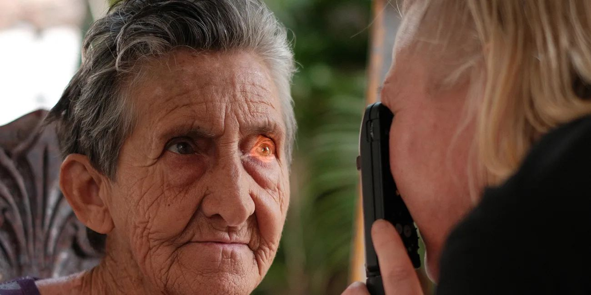

Forside / Synsundersøkelse
Synsundersøkelse
En synsundersøkelse handler om mer enn styrke. Vi ser på hvordan øynene dine fungerer sammen, og om det er tegn på noe som bør følges opp.
Grundig, ikke bare raskt
Undersøkelsen tilpasses deg og det du bruker øynene til. Vi måler synsskarphet, samsyn og øyehelse, og snakker om hvordan du opplever synet i hverdagen.
- Synsskarphet på nært og langt hold
- Samsyn og øyemotorikk
- Kontroll av øyehelse
- Behov for briller eller linser


Barn kan skjule synsproblemer
Barn merker ofte ikke at synet er dårlig — de tror bare det er sånn verden ser ut. En undersøkelse fanger opp det som ellers kunne blitt oversett.
Ta kontakt, så finner vi et tidspunkt som passer for både barn og foreldre.
Spørsmål om synsundersøkelsen
Hvor ofte bør jeg sjekke synet?
De fleste bør ta en synsundersøkelse hvert annet år. Har du kjente øyesykdommer i familien, eller merker endringer, bør du komme oftere.
Tar det lang tid?
Sett av rundt 30–45 minutter. Vi tar oss tid til å forklare det vi finner.
Får jeg vite om jeg trenger briller med en gang?
Ja. Du får en forklaring på resultatet, og hvilke alternativer du har — briller, linser eller ingen ting akkurat nå.
Kan jeg bruke linser i stedet for briller?
For mange er begge deler aktuelt. Vi vurderer det under undersøkelsen, og kan tilpasse linser hos oss.
Bestill synstest
Ring 32 89 65 10, eller send en melding med ønsket tid.